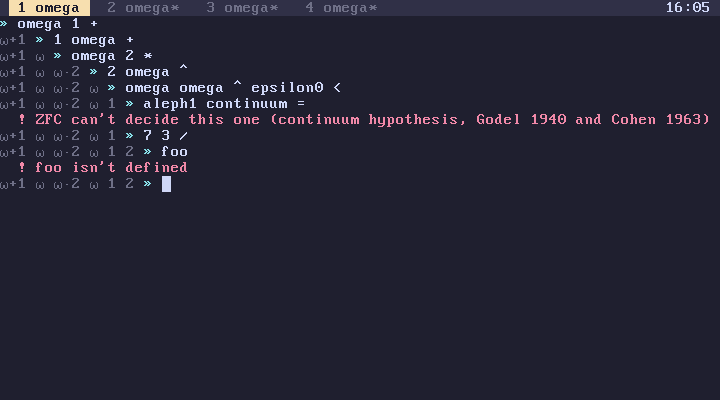

subverge
subvergeTransactions
- What a line is
- What is protected
- Lines that change nothing
- Failing on purpose
- Continuing after a failure
- CPU faults
- How it works
Each line typed at the prompt runs as a transaction on the tab's world, its stack and its definitions. Either the whole line takes effect or none of it does.
1 2 3
[ 7 ] :seven 4 5 0 /
The division fails. seven isn't defined, 4 5 isn't pushed, and the stack is still 1 2 3.

What a line is
A transaction is one line from the prompt, and everything that runs because of it: every word, every quote, every program it starts. Running snake or learn is one line, however long it runs. A failure anywhere inside fails the whole line.
The other things that run code each have their own rule:
| Code | Rule |
|---|---|
| a line at the prompt | one transaction |
startup at boot |
one transaction in tab 1 |
| a saved world at boot | one transaction per tab |
| a root rebuild | all or nothing, separately from any tab |
a quote inside try |
continues the line on failure, without rolling back |
What is protected
A transaction protects the world, which is the stack and the tab's definitions. A failed line leaves both unchanged, and every value keeps its identity.
Everything else happens the moment the word that does it runs, and stays done when the line fails:
- printed text stays on the screen;
- the screen drawn with
putandtext, and the tab's title; - the machine: memory written with
poke, ports written without, memory taken withalloc; - root edits that have already built;
- the theme, the logo, and colours set with
rgb; - the disk: a save happens after a line succeeds, but
installandsavewrite as they run.
A program that changes the machine and then fails halfway leaves its changes in place. life frees its memory at the end, so interrupting it with Ctrl-C leaks the two boards it allocated.
Lines that change nothing
A line that leaves the stack and definitions as they were, such as words or "hi" say, commits nothing. It doesn't enter the back history and nothing is written to disk. This is decided by comparing the result with the world the line started from, so a line that pushes a value and drops it again also counts as unchanged.
Failing on purpose
Any failure ends the line, so a failure is also a way to cancel one. ask fails with cancelled on Ctrl-C, and code that finds a problem halfway can stop with fail, which fails the line with a message of your own:
[ { n } n 100 > [ "too big" fail ] when n 2 * ] :double-small
500 double-small
! too big
Nothing the line did to the world stays.
Continuing after a failure
try runs a quote and keeps a failure inside it from ending the line. It doesn't roll anything back: whatever the quote did before failing stays. See catching.
CPU faults
A CPU exception, such as a page fault from a bad peek, restarts the tab instead of failing the line. The tab prints the fault and your last line was dropped, and its world is the one from before the line, since the line never committed. The other tabs carry on.
How it works
A line runs on a working copy of the stack and a pointer to the current definitions. Definitions are only ever added in front of the existing ones, never changed in place, so the working copy shares everything with the committed world and takes almost no time to make. Committing the line means recording the new stack and the new head of the definitions as the current world; failing means forgetting them. For the details, see how worlds work and the interpreter.